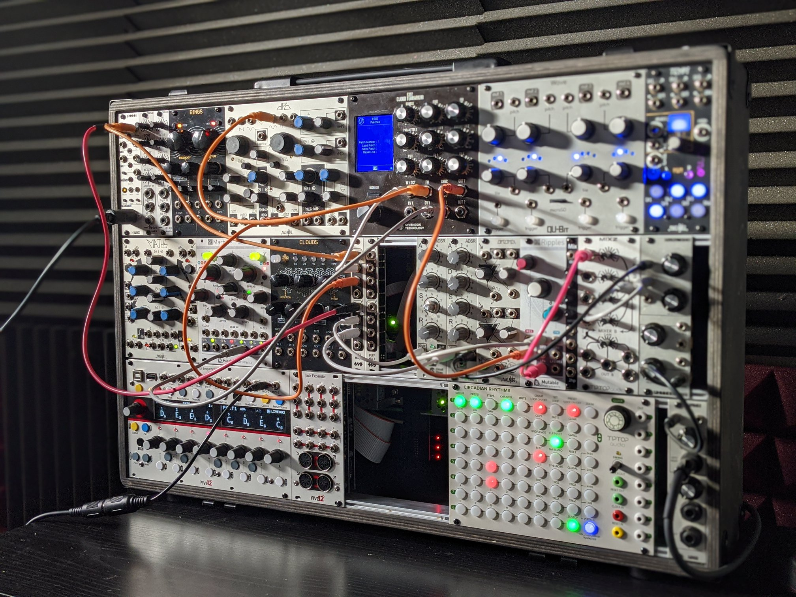
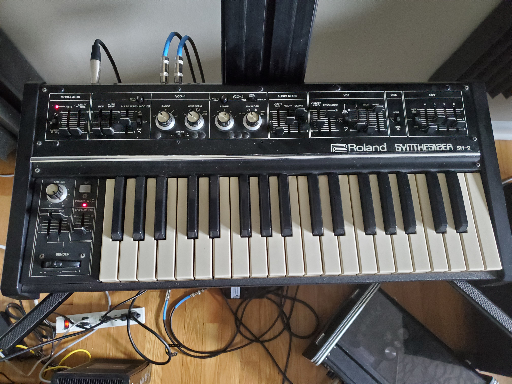

Sounds For Dynamic States
Welcome to the home page for the synthesizer and electronic music project Valcove. I began Valcove in 2014, shortly after moving to Chicago and setting up my first studio in my apartment. Over the last six years I've released several albums, begun playing live, and expanded my studio into a dedicated space. While you're here, be sure to check out:
- The album information page
- A synth picker that helps you decide on gear based on budget and equipment type.
- A slideshow of my current studio setup
- Contact information for updates on releases and upcoming shows
Albums
Eastward
I released the Eastward demo on April 06, 2015. It represents about two years of work, starting around when I first moved to Chicago. At this stage I was obsessed with Monolake/Robert Henke, and the music is a bit of an awkward attempt at copying his style without branching off into finding my own voice. That said, I'm proud of this album for its status as a stepping stone into my later musical output. A beat-driven version of "Redaction" sometimes makes its way into my live sets these days, as the droning FM background pads are the one section of the demo that I feel I really nailed.
Forge
Wired Explorations
Mid-2018 through late 2020 was a fairly quiet year thanks to the one-two-punch of writer's block and a cross-state move setting me behind in the writing process. By the end of 2019 I had finally started jamming again, and found in my new home state of Wisconsin an opportunity to release a track on a split of local techno producers. The Wired Explorations Volume 1 splilt features my track "Supplicant," which I used to experiment with more aggressive and dance-floor focused sounds while still maintaining an ambient backbone. I'd highly recommend this album to interested listeners as the other producers on it contributed some excellent work.
Synthesizer Recommendations
Studio Slideshow
I started building my studio in 2013. Over the last seven years I've used each of my instruments to contribute to my albums.

The E352 Cloud Terrarium is the main audio source of my eurorack setup. Its wavetable system is particularly good for light, plucky leads. I usually sequence it with either the Vector or MIDI from Live.

I've been working on this 5U rig since 2017. I got most of my utility modules from Synthesizers.com to keep things cost-effective. The Club of the Knobs Fixed Filter Bank is amazing at tone-shaping, with a lot more subtlety than you'd get out of a standard lowpass filter.

I picked up this Prophet 10 almost immediately after I heard Sequential was rereleasing it. It's been the main source of pads for most of my ambient music lately. The "Vintage" knob for switching oscillator stability makes a surprisingly noticeable difference - setting it to "1" almost makes it sound like there's an LFO on the fine tuning.

I found this SH-2 from a local seller who found it while cleaning out his friend's basement. While it's monophonic, the second oscillator puts it a cut above the SH-1 in terms of sound options. Some folks say its oscillators on their own are stronger than the Jupiter 8's.
Contact
Provide your contact information for updates on upcoming shows, streams and albums.